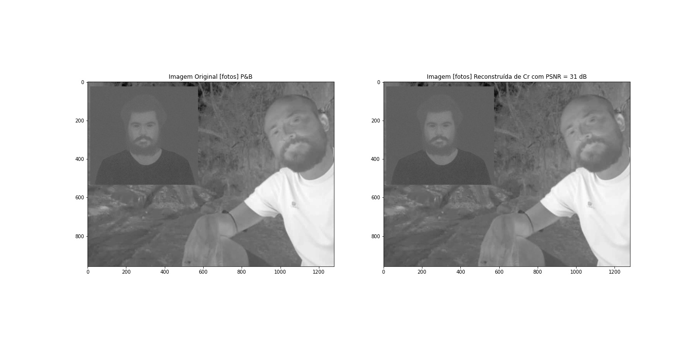
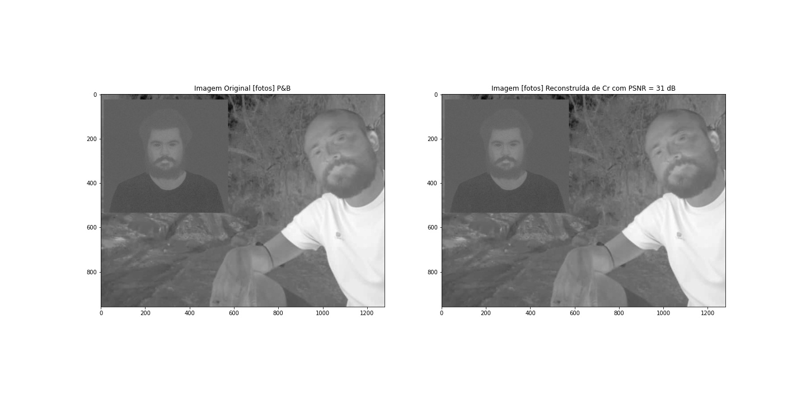

1. Objetivos
Este laboratório tem os seguintes objetivos:
- Efetuar a codificação de imagem e a decodificação por DWT e IDWT;
- Testar funções de codificação multinível;
- Verificar a taxa de compressão só com a componente de aproximação.
Obs.: Para este laboratório não foi fornecido um roteiro em PDF, mas o notebook fornecido já continha o passo a passo bem definido.
2. Desenvolvimento
Para o desenvolvimento deste laboratório, foi utilizado o Jupyter Notebook fornecido e editado no Google Colab. O arquivo final pode ser visualizado neste link.
Inicialmente foram importadas as bibliotecas necessárias e realizado o download dos arquivos das imagens originais a serem codificadas ao longo do laboratório: fotos.jpg; heitor.jpg; e luiz.jpg. Este procedimento é semelhante ao que já foi executado anteriormente nos demais laboratórios.
A primeira codificação executada foi a conversão das imagens para P&B (codificação de luminância), usando a função cv.cvtColor(). Além disso, foi aplicado a Transformada Discreta de Wavelet (DWT) para separação dos coeficientes, com a função pywt.dwt2(). O resulado pode ser visualizado nas imagens abaixo:


É importante observar que, para melhor organização, as imagens foram criadas na sequência (lado a lado): Aproximação (CA); Bordas Verticais (CV); Bordas Horizontais (CH); e Bordas Diagonais (CD). Além disso, nota-se que a mesma imagem foi convertida previamente para luma-chroma (YCrCb separadas), apresentadas em sequência: Y, Cr e Cb, uma abaixo da outra para cada uma das fotos originais.
Foi calculado o erro quadrático médio (MSE) e a Relação Sinal Ruído de Pico (PSNR). O MSE é obtido somando-se o erro quadrático de reconstrução pixel a pixel entre a Imagem Original e a Reconstruída e normalizando pela dimensão (LxA) da imagem:
$MSE = \frac{1}{LA} \sum_{i=0}^{L}\sum_{j=0}^{A} \left[ O(i,j) - R(i,j) \right] ^2$
Já a PSNR é definida para cada plano componente da imagem como:
$PSNR = 10\log_{10} \left( \frac{MAX_I^2}{MSE}\right)$
sendo $MAXI$ o valor máximo do pixel, que para 8 bits equivale a 255, logo:
$PSNR = 20\log_{10} \left( 255 \right) - 10\log_{10} \left( MSE \right)$
OBS.: Para uma imagem RGB, $MSE = MSER + MSEG + MSEB$, sendo similar definiação para YCrCb e HSV.
Os valores obtidos para cada foto são mostrados abaixo, seguidos das imagens reconstituídas com PSNR:
fotos - MSE_Y = 8.41e-25
fotos - PSNR_Y = 288.88 dB
fotos - MSE_Cr = 1.23e-24
fotos - PSNR_Cr = 287.25 dB
fotos - MSE_Cb = 1.08e-24
fotos - PSNR_Cb = 287.81 dB
luiz - MSE_Y = 8.25e-25
luiz - PSNR_Y = 288.97 dB
luiz - MSE_Cr = 5.61e-25
luiz - PSNR_Cr = 290.64 dB
luiz - MSE_Cb = 5.10e-25
luiz - PSNR_Cb = 291.06 dB
heitor - MSE_Y = 1.78e-25
heitor - PSNR_Y = 295.62 dB
heitor - MSE_Cr = 6.75e-25
heitor - PSNR_Cr = 289.84 dB
heitor - MSE_Cb = 5.44e-25
heitor - PSNR_Cb = 290.78 dB
 


Abaixo apresentam-se os resultados dos testes de multiresolução das funções pywt.wavedec2() e pywt.waverec2(). Além disso, apresenta-se uma montagem das fotos com as duas funções.
Seguindo a mesma proposta, foi realizada a reconstituição de imagem colorida com base na função pywt.idwt2() que executa a Transformada Discreta Inversa de Wavelet (IDWT).

Abaixo apresenta-se o resultado do cálculo da taxa de compressão de aproximação com a imagem original:
N0 N1 N2
fotos 1227318 25.07% 6.35%
luiz 286214 25.28% 6.72%
heitor 246102 25.33% 6.69%
Abaixo apresenta-se o resultado do cálculo da taxa de codificação DWT/IDWT com a imagem original:
RAW DWT
fotos 3678774 25.00%
luiz 855462 25.00%
heitor 733150 25.07%
Finalmente, foi realizada a reconstrução da Imagem colorida e cálculo da MSE de cada plano de cor e da PSNR total.
MSE_R = 1.10e-24
MSE_G = 7.73e-25
MSE_B = 6.65e-25
PSNR total = 284.09 dB
MSE_R = 8.06e-25
MSE_G = 8.11e-25
MSE_B = 8.51e-25
PSNR total = 284.21 dB
MSE_R = 3.29e-25
MSE_G = 1.39e-25
MSE_B = 1.06e-25
PSNR total = 290.54 dB
3. Conclusões
Ao longo do desenvolvimento deste laboratório, foi possível conhecer as técnicas de tratamento usando a Transformada Discreta de Wavelet, além da dua inversa,
realizando a codificação e decodificação de imagens com as funções pywt. Além disso, foi possível experimentar as funções de codificação multinível e verificar
as taxas de compressão em cada processo.